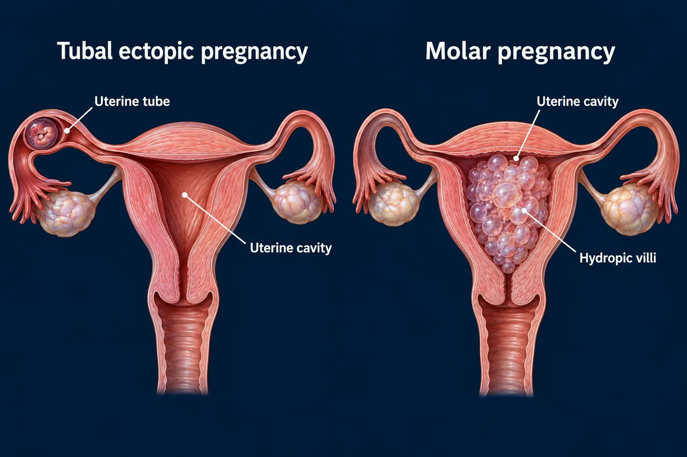

ABSN STUDY HUB · VISUAL STUDY CARD
Ectopic and molar pregnancy

Course labels and notes from the original graphic, arranged into readable sections. The illustration is schematic.
Course overview
EARLY PREGNANCY BLEEDING — SORTED BY WHERE THE PREGNANCY IS
Shoulder pain means a ruptured ectopic. Sky-high hCG with no fetus means a mole.
🩸 ECTOPIC — in the tube
🩸 ECTOPIC — in the tube
implanted HERE
~90% in a tube
blood irritates the DIAPHRAGM
referred SHOULDER pain
Classic triad: missed period + one-sided stabbing pain + spotting. hCG rises more slowly than it should.
Shoulder pain in early pregnancy is a ruptured ectopic until proven otherwise. Straight to theatre.
🍇 MOLAR — grapes, and no baby
🍇 MOLAR — grapes, and no baby
hCG
far higher than it should be
A uterus far too big for the dates, dark brown "prune juice" bleeding, and severe vomiting.
No fetal heart tones — because there is no fetus. hCG is followed for a year afterwards.
🩺 WHAT EACH ONE NEEDS
🩺 WHAT EACH ONE NEEDS
ECTOPIC
· Unruptured → methotrexate. No folic acid and no alcohol while on it, · and no intercourse until the hCG is undetectable. · Ruptured → two large-bore IVs, type and crossmatch, oxygen, theatre. · RhoGAM if she is Rh negative. And name the loss — it is one.
MOLAR
· Evacuated by suction curettage — it is not a pregnancy. · Serial hCG for a full year: it must fall to zero and stay there. · Reliable contraception all year: a new pregnancy would · raise hCG and hide a choriocarcinoma developing.
Both present as first-trimester bleeding. Where the pregnancy is — and whether there is a fetus at all — is what separates them.